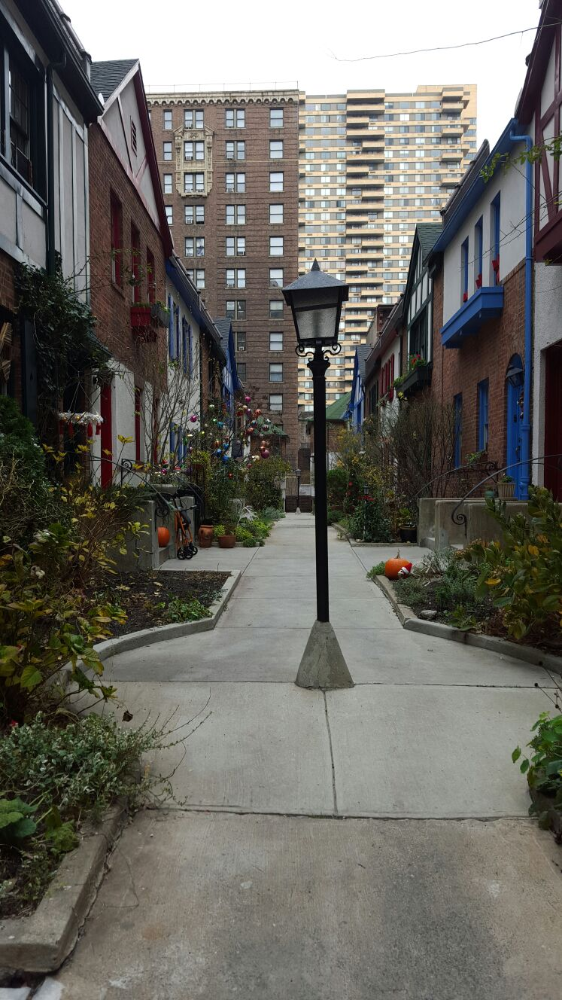
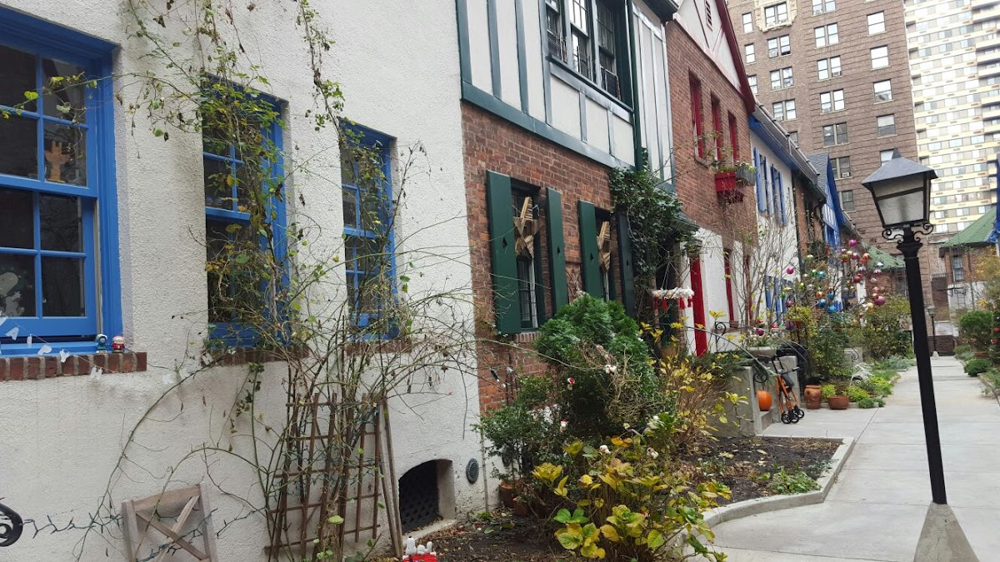
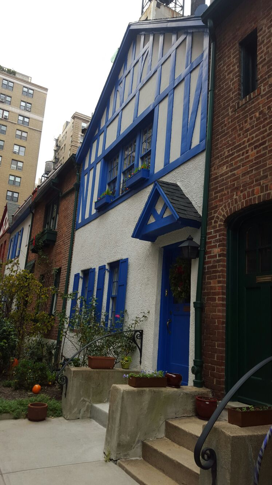
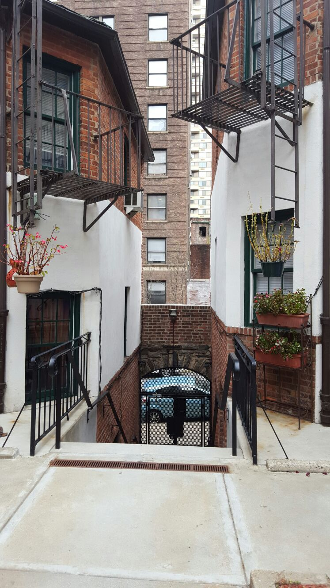

Courts & communities
Pomander Walk
A Tudor-style residential complex located on the Upper West Side of Manhattan.
Background
Pomander Walk was built in the 1920s and designed to resemble a quaint English village. The complex includes 27 buildings with half-timbered facades and is a designated New York City landmark, celebrated for its distinctive architecture.
Original AI-assisted background; not independently verified.
From the original map
Inspired by a 1910 romantic comedy play by Louis N. Parker called Pomander Walk—set in a fictional London lane—Healy intended it as a temporary project to generate income while he raised funds for a grand hotel. Designed by the New York architecture firm King and Campbell, the two- and three-story homes feature stucco, brick, and half-timber facades, evoking an English village. Healy’s death in 1927 halted his hotel plans, leaving Pomander Walk as a permanent fixture. Originally an all-rental complex with about 61 units (each building typically had one apartment per floor), it housed theatrical folks like Rosalind Russell and Humphrey Bogart, drawn to its whimsy. By the 1970s, it had deteriorated and faced demolition, but residents fought back, securing its designation as a New York City Landmark and a spot on the National Register of Historic Places in 1982. A 2009 renovation restored its pastel charm—think green, blue, and red facades with flower boxes—earning it a preservation award.
Homes and shared residential spaces may be private. View from public streets unless entry is clearly permitted; map pins are reference points, not confirmed entrances.
Nearby places
- 210 W 90th (Astor Court)0.3 mi ↗
- Track on the roof1.4 mi ↗
- Sylvan Court1.9 mi ↗
- Henderson Place2.0 mi ↗
Straight-line distances, not walking routes.
Discussion & corrections




40.79400, -73.97331 · Explore the surrounding area ↗